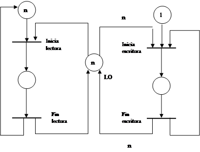

Introducción a Redes de Petri
Introducción
La teoría de las Redes de Petri se ha desarrollado considerablemente desde sus inicios con la disertación de Carl Adam Petri, en 1962 en la cual se formularon las bases de una teoría para la comunicación entre componentes asíncronas de un sistema computacional.
El diseño de estructuras de control para sistemas paralelos que imponen determinadas restricciones en su funcionamiento, como por ejemplo, el uso de recursos compartidos, es generalmente mucho más complicado que el diseño del control para sistemas secuenciales. Este se debe fundamentalmente a que en sistemas paralelos, los procesos pueden cambiar su estado de forma independiente, lo cual provoca que se pierda la visión sobre el estado global de tales sistemas.
La Teoría de las Redes de Petri es en esencia un lenguaje o medio de especificación general de un modelo que es interpretable en cualquier campo de aplicación y que permite una fácil verificación de un determinado diseño de un sistema. Su campo fundamental de aplicación es la Modelación de Sistemas en los que los eventos discretos ocurren de forma independiente y concurrente; pero bajo determinadas restricciones.
Su aplicación práctica en el diseño y análisis de sistemas se ha realizado de varias formas; las dos principales:
1.
Esta forma convencional requiere conversión constante del sistema originalmente diseñado en una Red de Petri. La otra alternativa es:
2.
En esta forma más radical se requiere la conversión final de la Red de Petri ya ajustada a un sistema diseñado, digamos para la Simulación (o con otro objetivo). En ambos casos el análisis de las propiedades es el centro de la Teoría.
Redes de Petri. Ejecución
Esencialmente, una Red de Petri es un grafo dirigido con dos tipos de nodos: localizaciones (que representaremos por círculos) y transiciones (que representaremos por barras). Los arcos del grafo siempre van de uno de los tipos de nodo al otro y pueden tener una multiplicidad. Los nodos tienen además un número natural asignado que se denomina marcación
Si una localización no tiene marcas, es que por defecto es 0. Si un arco no tiene multiplicidad es que por defecto es 1. En términos generales, en las redes de Petri que se utilizan para Simulación, las transiciones (barras) significan eventos. Los nodos con sus marcaciones y la multiplicidad de los arcos se utilizan para representar "condiciones".
Definición
Una Red de Petri es un quíntuplo N = [ P , T , F , M , mo ], donde
¨ P = {p1 , p2 , ... , pn}, n > 0 es un conjunto finito de localizaciones T = { t1 ,t2 , ... , tm } , m > 0 es un conjunto finito de transiciones (P y T son disjuntos)
¨ F Í ( P x T ) Ç ( T x P ), esto es, F es un conjunto de arcos de la forma (p,t) o (t,p) con p Î P y t Î T, y tales que dom(F) Ç codom(F) = P Ç T, lo que significa que en todo nodo (localización o transición) llega o sale al menos un arco.
¨ M : F N \ {0} es una función con valores naturales positivos que a cada arco de F le asigna una multiplicidad (gráficamente se considera por defecto que la multiplicidad es 1)
¨ mo : P N es una función de marcación inicial, que a cada localización le asigna un número natural (gráficamente se considera que la marcación por defecto de un nodo es 0)
En el ejemplo gráfico inicial P = {p1 , p2 , p3 , p4 , p5 } T= {t1 , t2 , t3 , t4 } F = { (p1,t1) , (t1,p3) , (t1,p2), ... }
M(t1,p4) = M(p4,t3) = 2 y para los restantes arcos es 1. mo(p1) = mo(p5)=1 , mo(p4)=2 , y para las restantes localizaciones es 0.
Como en general Card(P) = n <¥ , una marcación se caracteriza por un vector de Nn, en el ejemplo (1,0,0,2,1).
Dada una transición t de la Red de Petri, se llaman precondiciones de t al conjunto de localizaciones p Î P para las cuales existe un arco (p,t) Î F. Se llaman poscondiciones de t al conjunto de localizaciones p Î P para las cuales existe un arco (t,p) Î F. Análogamente se definen las pretransiciones y postransiciones de una localización.
Una Red de Petri es dinámica. Se ejecuta "disparando" las transiciones. Al dispararse una transición se reducen marcas en sus precondiciones y se incrementan marcas en sus poscondiciones. Para que una transición pueda dispararse, primero debe estar "capacitada" o tener "concesión" para ello. Una transición estará capacitada si para todas sus precondiciones las marca es mayor o igual que la multiplicidad del arco que va desde la precondición a la transición. Al dispararse se reducen tantas marcas en una precondición como multiplicidad tenga el arco asociado y aparecerán tantas marcas en una poscondición de la transición como multiplicidad tenga el arco de la transición a la poscondición. Las restantes localizaciones que no son precondición ni poscondición de la transición no se alteran con el disparo de ésta.
En el ejemplo gráfico, digamos la transición t4 está capacitada para dispararse porque
m(p5) = 1 ³ M(p5 , t4).
Cuando ella se dispara resultará:
m(p5) = 0 m(p3) = 1 m(p2) = 3
El resultado es una nueva marcación en la red (m) que se identifica por el vector (1,0,1,3,0). En este sentido la red de Petri es dinámica porque su última componente (las marcaciones) varían con el disparo de las transiciones. Para poner otro ejemplo, la transición t2 no está capacitada porque por ejemplo m(p2) = 0 < M(p2,t2) = 1.
Formalmente, si m es una marcación de la red y t está capacitada para dispararse, el disparo de t produce una nueva marcación m´ en la red, lo representamos escribiendo m t® m´ y m´ que definida por:
¨ m´(p) = m(p) si p no es precondición ni poscondición de t
¨ m´(p) = m(p) - M(p,t) si p es precondición de t (y no es poscondición)
¨ m´(p) = m(p) + M(t,p) si p es poscondición de t (y no es precondición)
¨ m´(p) = m(p) - M(p,t) + M(t,p) si p es precondición y poscondición de t
Las transiciones se disparan en una Red de Petri en cualquier orden, esto es, en una red de Petri, no se considera el tiempo. Los disparos continúan mientras existan transiciones capacitadas y terminarán sólo si ninguna transición tiene concesión.
Dada una Red de Petri N con una marcación inicial m, se denomina conjunto de alcanzabilidad de N a partir de m al conjunto R[N, m] de todas las marcaciones m´a las que se puede llegar partiendo de m por un número finito de disparos de transiciones:
m t1® m1 t2® m2 t2® . . . mx tk® m´
Se puede representar R[N, m] en forma de un árbol con nodo raíz m y ramas que identifican las transiciones disparadas. Ejemplo:
Véase que t1 puede dispararse sucesivamente y lo que hace cada vez es incrementar en 1 la marca de p3 . En cambio, una vez que se dispare t2 se reduce la marca de p1 en 1 y se incrementa la marca de p2; pero ya después no se puede disparar ninguna otra transición. El árbol de alcanzabilidad es:
R[N,m] = { (1,0,n) , n ³ 0 } Ç { (0,1,m) , m ³ 0 }
Se denomina L[N,m] al conjunto de todas las sucesiones finitas de transiciones que pueden dispararse consecutivamente a partir de m en la red N. En el ejemplo:
L[N,m] = { t1 , t2 , t1t1 , t1t2 , t1t1t1 , t1t1t2 , . . . }
A partir de formalizaciones como estas, se pueden demostrar propiedades de las redes de Petri, por ejemplo.
¨ Si observamos cada marcación m como un n-plus y q es una transición tal que m q® m´ entonces para toda transición m´´ Î Nn , se tiene ( m + m´´ ) q® (m ´+ m´´ ). Esta propiedad se conoce como monotonía de las redes de Petri respecto al disparo de transiciones.
¨ Si q = (t1 t2 t3 ... tk ) Î L[N, m] y resulta m q® m´ en el sentido que
m = mo t1® m1 t2® m2 t2® m3 ... tk® mk = m´
y D q = m´ - m Î Zn entonces D q = D t1 + D t2 + . . . + D tk , donde D ti = mi - mi-1 para i=1,2,...,k
Modelación con Redes de Petri. Ejemplos
Ejemplo de un sistema de prestación de servicios: el sistema recibe un pedido, ejecuta determinado servicio y envía el resultado de su ejecución al exterior.
Los eventos que ocurren en el sistema los representamos por las siguientes transiciones:
t1 arriba un pedido al sistema
t2 el sistema inicia la ejecución de un pedido
t3 el sistema termina la ejecución de un pedido
t4 el resultado de la ejecución es enviado al exterior
Observe que realmente en el sistema real hay tres eventos: arribo de un pedido, ejecución de un pedido y envío del pedido al exterior. Los eventos que no consumen tiempo como el arribo y el envío al exterior, lo representamos por una transición simple. El evento que consume tiempo (la ejecución como tal del pedido lo descomponemos en dos transiciones (inicio de la ejecución y fin de la ejecución) con una localización intermedia que es en sí la ejecución:
Las localizaciones representan lo siguiente:
p1 el sistema está ocioso y esperando a que arribe una petición
p2 existe un pedido que espera ser ejecutado
p3 el sistema está ejecutando el pedido
p4 el sistema ya terminó la ejecución del período
La localización p3 entre t2 y t3 representa la actividad de ejecución. Las restantes localizaciones son “condiciones” que se requieren para una transición. La transición t1 se dispara sin condiciones y echa a andar la red pasando de la marcación inicial (1,0,0,0) a (1,1,0,0). Ahora pueden dispararse t1 (un segundo arribo) o t2 inicio de la ejecución del primer pedido, lo que conduciría a (1,2,0,0) o (0,0,1,0) respectivamente. Si esto último ocurre, entonces se puede disparar t1 o t3…

Véase que las localizaciones p2 y p4 pueden así tomar valores naturales que representan respectivamente el número de pedidos arribados pendientes de atención y el número de pedidos terminados listos para salir al exterior. En principio desde:
(1,0,0,0) solo se puede disparar t1
(1,n,0,0) se pueden disparar t1 o t2
(0,n,1,0) se pueden disparar t1 o t3
(1,n,0,1) se pueden disparar t1 o t2 o t4
(0,n,1,1) se pueden disparar t1 o t3 o t4
Más generalmente, si μ = (1,0,0,0), R[N,μ] consta de todos los cuádruplos de la forma (1,n,0,k) o (0,n,1,k) con n y k números naturales y desde:
- (0,n,1,k) se puede disparar t1 para alcanzar (0,n+1,1,k), o se puede disparar t3 para alcanzar (0,n,1,k+1) o se pude disparar t4 para alcanzar (0,n,1,k-1) esta último siempre que k sea mayor o igual a 1.
- (1,n,0,k) se puede disparar t1 para alcanzar (1,n+1,0,k), o si n es mayor o igual a 1 se puede disparar t2 para alcanzar (0,n-1,1,k) o si k es mayor o igual a 1 se puede disparar t4 para alcanzar (1,n,0,k-1)
Como las redes de Petri son sistemas inherentemente paralelos o concurrentes, dos transiciones que estén capacitadas y no interactúan entre si pueden dispararse de forma independiente. En estas redes no es necesario “sincronizar” estos resultados a menos que esta sincronización sea un requerimiento del sistema que se está modelando.
Las redes de Petri son asíncronas. La única propiedad temporal importante, desde el punto de vista lógico es la definición de un orden parcial para el disparo de las transiciones para lo cual no se requiere una noción de tiempo explícita pues la red contiene toda la información necesaria para definir una secuencia de disparos. En el ejemplo anterior, t3 sólo puede dispararse después de t2.
El orden parcial que se establezca es uno de todos los posibles pues pueden existir varias transiciones posibles lo cual es un reflejo de la naturaleza no determinista del modelo de ejecución de las redes de Petri. Eso se corresponde más con el sistema real.
Un ejemplo en que la concurrencia no es un problema es:
Ambas transiciones están capacitadas y pueden ocurrir concurrentemente. En cambio, en la siguiente hay conflicto:

porque el disparo de t1 inhibirá a t2 o viceversa.
El campo de aplicación más trivial para la utilización de las redes de Petri es la modelación de sistemas en los que los eventos ocurren asíncronos e independientemente. Pero la existencia de conflictos (que violan la independencia) no es un defecto: las redes de Petri pueden servir precisamente para modelar conflictos del sistema real, por ejemplo en el uso de recursos compartidos. De hecho el ejemplo anterior donde hay conflictos puede ser el modelo más simple de un recurso compartido y necesario tanto para t1 como t2
Veamos el ejemplo del productor/consumidor que involucra el uso de un recurso compartido, específicamente el uso de un Buffer. El productor produce objetos uno a uno y los almacena en un buffer. El consumidor los va retirando consumiendo uno a uno. Por supuesto que el consumidor necesita, para realizar su trabajo, que al menos haya un producto en el Buffer.
Los eventos esenciales son dos: producción y consumo. Las transiciones correspondientes son:
1. Inicia la producción de un objeto por el productor
2. Finaliza la producción de un objeto y se coloca en el buffer
3. Se retira un objeto del buffer e inicia su consumo
4. Termina el consumo de un objeto
- La localización marcada con s significa la condición para iniciar producción. Cuando el productor está ocioso y listo para comenzar a producir s=1 y cuando se inicia producción s=0 hasta que termine.
- La localización entre las transiciones inicio de producción y fin de producción es la actividad de producción en sí.
- La localización marcada con t es la condición para inicial el consumo. Cuando el consumidor terminó con el producto anterior y está listo para consumir t=1 y se reduce a cero cuando extrae un producto del buffer e inicia su consumo.
- La localización entre los eventos inicio y fin de consumo es la actividad de consumo en sí.
- La localización que se identifica con una B es el buffer y puede tener como marca cualquier número natural para representar la cantidad de objetos producidos y no consumidos.
Una variante interesante de este modelo es aquella que responde a un sistema similar pero con un tamaño limitado del buffer, digamos “n”. Entonces el productor no puede colocar en el buffer si no hay capacidad en éste. Para ello el buffer se desglosa en dos localizaciones: B y B´. B contiene la cantidad de objetos producidos y no consumidos y B´ la capacidad disponible en el buffer (se inicializa con B=0 y B´=n)
Observe que la actividad de producción y la colocación en el buffer no se activan a menos que la capacidad disponible del buffer sea mayor que 1. Cada vez que se coloca algún producto en el buffer, se reduce la capacidad disponible de éste. A su vez, cuando se extrae un producto del buffer para iniciar su consumo, se reduce la cantidad de productos en B y se incrementa la capacidad disponible en B´. De esta manera μ(B)+μ(B´) = n y se garantiza la cota deseada.
El problema de los lectores/escritores es bastante similar al anterior, en el sentido que hay un área de datos (recurso compartido) sobre el cuál pueden leer cualquier cantidad de lectores de n posibles, mientras que entre los escritores (personas con derecho a escritura) uno solo puede tener acceso (el inhibe a los restantes escritores y a todos los lectores); pero además sólo puede tener acceso a escritura si no hay nadie leyendo.
Implementamos en principio el buffer en una localización con marca inicial “n” y que durante toda la ejecución de la red puede ser interpretada como la cantidad de lectores ociosos (LO). Ella se reduce tan pronto un lector inicia la lectura y se incrementa cuando termina. Por otra parte, para que una persona con derecho pueda comenzar a escribir, es necesario que la marca de LO sea n, esto es, todos los lectores estén ociosos. En este momento se pone entonces en 0 porque trazamos un arco con este multiplicidad a la transición que inicia la escritura y con ello se inhibe a los lectores; también en este momento la localización que indica el estar listo para la escritura y con marcación inicial 1, se pone en 0 para inhibir a los demás escritores. Cuando termina de escribir se restablecen los valores “n” y “1” precondiciones del inicio de escritura.
Entonces, con estas ideas, una primera versión puede ser la siguiente (observe la multiplicidad de los arcos que llegan al inicio de escritura o que salen del fin de escritura):

Ahora, después de construida una versión a imagen y semejanza de los problemas anteriores, podemos observar que las dos localizaciones con marcación inicial “n” juegan exactamente el mismo papel desde el punto de vista de precondiciones del inicio de lectura. Entonces podemos simplificar nuestra red:
Si en el problema de lectores/escritores, el número de lectores no está acotado, el sistema no puede modelarse, al menos con una red de Petri de este tipo (después veremos una extensión del concepto de red de Petri que si permite resolverlo). En cierta forma, la parte del sistema que corresponde a los lectores se puede modelar implementando un contador de lectores trabajando; pero la parte de los escritores no, porque la localización contadora puede tener como marca cualquier número natural y las redes de Petri, tal como la hemos definido hasta ahora, no tienen capacidad para saber cuando una precondición no acotada tiene marca nula.
Para dar una idea de la generalidad de las aplicaciones, veamos el siguiente modelo de un sistema químico caracterizado por 2 ecuaciones. La primera representa la combustión del ácido oxálico (H2C2O4), la segunda ecuación representa la desoxigenación del peróxido de hidrógeno o agua oxigenada (H2O2). De ambas ecuaciones resulta que la combustión del ácido oxálico en presencia de agua oxigenada produce agua normal (H2O) además del dióxido de carbono (CO2). Este tipo de combustión es bastante frecuente en productos orgánicos.
R1: H2C2O4 ® 2 CO2 + 2 H+ + 2 e-
R2: 2 H+ + 2 e- + H2O2 ® 2 H2O
Químicamente esta secuencia de reacciones se justifica porque cuando el H2O2 actúa como reductor se "oxida a O2", lo que quiere decir que
H2O2 - 2 e- resulta en O2 + 2 H+
Y por lo tanto, frente al H2C2O4 el actúa como oxidante y se forma agua. Nosotros consideramos esencialmente las dos reacciones R1 y R2 como sistema. Cada transición en la red representará una de estas reacciones. Las localizaciones son los compuestos y las multiplicidades de los arcos, las moléculas necesarias para el balance de la reacción. La marcación inicial es la cantidad de moléculas de cada compuesto disponibles al principio.
Si la marcación inicial (H2C2O4,CO2,H+,e-,H2O2,H2O) es como en el grafo (2,0,0,0,4,0), entonces el árbol de alcanzabilidad sería el que aparece a continuación.
Así, las cantidades iniciales de los compuestos (marcación inicial) son suficientes para producir 2 veces la reacción R1 y 2 veces R2 pero cada reacción R2 debe estar precedida por al menos una R1.
Las redes de Petri han encontrado aplicación en muchos otros problemas, por ejemplo, sistemas legales, verificación de programas, economía, política, modelación del cerebro humano, cálculo proposicional y procesamiento de lenguaje natural [Peterson 81]. En la Clase Práctica veremos como ellas sirven para analizar nuestros ejemplos clásicos de simulación y en Inteligencia Artificial podrán ver como ellas pueden servir para estimar los pesos de una red neuronal MLP.
Problemas de análisis en Redes de Petri
La teoría de las redes de Petri es sobre todo útil para analizar modelos. A continuación se hace una introducción a 4 de los principales problemas de análisis.
12.3.1. Acotación
Uno de los primeros problemas de verificación de un modelo es el de la realización del mismo, en el sentido de si se diseñó un sistema que posea una cantidad finita de estados alcanzables. En el caso de las redes, esto tiene que ver con la acotación de la misma.
Definiciones. Sea N = [ P, T, F, M, mo ] una red de Petri. Sea p Î P y m una marcación de N.
¨ La localización p se dice acotada en m si $ K Î N , " m´ Î R[ N, m ] , se tiene m´(p) £ K
¨ La red N se dice acotada en m si todas sus localizaciones son acotas en m , esto es si:
$ K Î N , " p Î P, " m´ Î R[ N, m ] , se tiene m´(p) £ K
Para el caso de K = 1 esta propiedad se llama seguridad. En una red de Petri segura se facilita la interpretación de las localizaciones como condiciones booleanas. Nótese que la acotación es una propiedad dinámica pues se define en base a todas las marcaciones alcanzables y depende, naturalmente de la marcación inicial. En la Teoría de las redes de Petri se logran resultados como los siguientes:
1. Una Red de Petri es acotada en una marcación m si y solo si su conjunto de alcanzabilidad R[N,m] es finito.
2. Una Red de Petri es acotada en m, si cada transición al dispararse distribuye como máximo tantas marcas para sus poscondiciones como marcas elimina de sus precondiciones (condición suficiente, no necesaria).
3. Si existen sucesiones de transiciones q y r y marcaciones m y m´ tales que
mo q® m r® m´
y resulta m´ > m (en el sentido que todas las componentes de m´ son mayores o iguales a las de m y al menos una es estrictamente mayor), entonces la red no es acotada en mo
4. Una red no es acotada en mo si y solo si existe una secuencia de transiciones r y marcaciones m y m´ en R[N, mo] tales que
m r® m´ y m´ > m
A manera de ejemplo, la red siguiente no es acotada. No lo es por ejemplo la localización p2 porque de (1,0,0,0) al dispararse t resulta (1,1,0,0) > (1,0,0,0)
No debe confundirse la acotación de la red de Petri con la acotación del árbol de alcanzabilidad. Claro que si el árbol de alcanzabilidad es finito, como en el problema de las reacciones químicas, la red de Petri es acotada, pero lo inverso no es cierto. Un contraejemplo es la red de Petri que modelamos en el epígrafe anterior para el problema del productor/consumidor con un buffer de capacidad limitada “n”. Aquí la red de Petri es acotada pues el conjunto de marcaciones alcanzables es finito, pero el árbol de alcanzabilidad es infinito porque eventualmente la red vuelve al estado inicial o a alguno de los intermedios formándose “ciclos”. Algo similar ocurre con el problema de los lectores/escritores con un número “n” de lectores.
Estos dos problemas sirven también para ilustrar por qué la condición 2 entre las formuladas anteriormente es suficiente para la acotación pero no necesaria. En el problema del productor, consumidor, digamos, el disparo de la transición que significa el término del consumo coloca “n+1” marcas en sus poscondiciones (en particular pone “n” en la capacidad disponible del buffer) y apenas retira 1 de sus precondiciones. Sin embargo, la red está acotada.
1.5.3.2. Conservación
La conservación es especialmente importante cuando las Redes de Petri se utilizan para modelar sistemas en los que está presente la utilización de determinados recursos, como por ejemplo, sistemas en los que existe la ocupación y liberación de dichos recursos. En este tipo de redes las marcas se utilizan para modelar los recursos disponibles en cada localización y es deseable chequear que los recursos ni se crean ni se destruyan durante la ejecución de la red.
Definición. Sea N = [ P, T, F, M, m ] una red de Petri. Se dice que N es estrictamente conservativa si
" m´ Î R[N, m] S m´(pi) = S m (pi) donde ambas sumatorias se desarrollan para i=1,2,...,n=Card(P)
Esta definición es demasiado fuerte pues exige que en cada transición la cantidad de precondiciones sea igual a la cantidad de poscondiciones. Por otra parte no tiene que haber una correspondencia biunívoca entre marcas y recursos (algunas localizaciones pueden representar recursos y otras condiciones). Para resolver esto se le asigna a cada localización un peso y se exige entonces que la suma ponderada de toda marcación alcanzable sea constante.
Definición. La red N = [ P, T, F, M, m ] es conservativa si existe un vector de pesos (w1, w2,...,wn) (n=Card(P)) tal que
" m´ Î R[N, m] S wi m´(pi) = S wi m (pi)
Veamos como ejemplo, la red de dos usuarios de un recurso:
Ver que el árbol de alcanzabilidad es:
La marcación inicial a la cual se regresa cíclicamente y que permite disparar i1 o i2 tiene una suma de sus componentes igual a 3 y dos ceros en su tercera y cuarta componente; pero cada vez que se dispara una de las transiciones anteriores, la suma se reduce a 2 y uno de los ceros de la 3ras o 4ta. componente se convierte en un 1. Entonces si utilizamos como vector de ponderación (1,1,2,2,1), demostramos que la red es conservativa pues cualquiera que sea la marcación alcanzable m´ resultará
m´(p1) + m´(p2) + 2 m´(p3) + 2 m´(p4) + m´(p5) = 3
El mismo problema, con 2 recursos compartidos (del mismo tipo) puede ser analizado con idéntico vector y resultará ahora
m´(p1) + m´(p2) + 2 m´(p3) + 2 m´(p4) + m´(p5) = 4
En general, con “n” recursos del mismo tipo, la suma para ese vector de ponderación será también una constante e igual a n+2.
Llamamos la atención por último que una red no acotada puede ser incluso conservativa respecto a un vector de pesos, con tal que el peso asignado a la localización no acotada sea cero y entre las localizaciones acotadas, la suma ponderada se mantenga constante.
12.3.3. Existencia
La motivación al considerar el problema de la conservación fue la utilización de recursos. Al tener en cuenta esto surge también el problema de Deadlock (bloqueo o punto muerto) que consiste en que el sistema llega a un estado en el que todos los procesos están bloqueados, es decir en un estado a partir del cual no pueden ocurrir más eventos. El Deadlock mirado como problema no es el arribo al final natural de la ejecución de la red, sino a un estado que aborta la continuación. En el caso de las redes de Petri se trata de una marcación en la cual ninguna transición está capacitada, una marcación que por demás no es deseable.
El ejemplo más simple puede ser el siguiente: un sistema con 2 tipos de recursos “q” y “r” y 2 procesos “a” y “b” que necesitan compartir ambos recursos. Supongamos que el proceso “a” ocupa primero el recurso “q” y luego el recurso “r”, liberándolos a ambos sólo cuando termina el proceso. El proceso “b” ocupa tambi”en ambos recursos pero en un orden inverso. La siguiente red de Petri modela este sistema de forma desafortunada. Los recursos se modelas por las localizaciones p4 y p5 respectivamente
En la marcación inicial (1,0,0,1,1,1,0,0) ambos recursos están disponibles y ambos procesos están listos para comenzar a trabajar. Una posible ejecución de esta red sería:
Inicia aq, Term aq e Inicia ar, Term ar, Inicia br, Term br e Inicia bq, Term bq, …,
Otros son evidentemente posibles pero el Deadlock se produce si se ejecuta:
Inicia aq, Inicia br,
La forma de evitar este bloqueo es liberando el primer recurso utilizado tan pronto sea posible, y en caso de que fuera necesario disponer de los dos recursos durante todo el proceso, entonces desde el inicio escogerlos a ambos.
El análisis de posibles Deadlock más complejos puede también algoritmizarse con ayuda de la teoría de redes de Petri y del árbol de alcanzabilidad, más bien de una versión finita del árbol de alcanzabilidad que se conoce como "árbol de cubrimiento". En ello intervienen conceptos como los siguientes:
Definiciones: Sea N = [P, T, F, M, m0] una red de Petri
¨ Una marcación m del conjunto de localizaciones P se dice muerta en N si no existe t Î T que esté capacitada en m.
¨ Una transición t Î T de la red N se denomina muerta en la marcación m si a partir de m ninguna marcación es alcanzable en la que t esté capacitada.
¨ Una transición t Î T de la red N se denomina viva en la marcación m si t no es muerta en ninguna marcación alcanzable a partir de m.
¨ Una marcación m del conjunto de localizaciones P se denomina viva en la red si todas las transiciones de T son vivas en m.
¨ La red N se denomina viva si su marcación inicial m0 es viva en la red.
En otras palabras, la marcación m está muerta en la red si a partir de ella no se puede efectuar ninguna transición. Cuando se alcanza un Deadlock se alcanza una marcación muerta. Por tanto las marcaciones muertas dentro del conjunto de alcanzabilidad son necesarias para el bloqueo, pero no suficientes, porque se puede alcanzar una marcación muerta con un fin normal de la ejecución de la red si el árbol de alcanzabilidad es de por si finito (recuérdese el ejemplo de las reacciones químicas).
Análogamente, cuando se alcanza una marcación que representa un Deadlock, todas las transiciones de T son muertas en esa marcación; pero se puede alcanzar una transición muerta en cierta marcación m con un fin normal de la ejecución de tal transición, por ejemplo si ella representa el inicio de un proceso que utiliza un recurso agotable, incluso se puede alcanzar un estado en que todas las transiciones de T son muertas en esa marcación (vale de nuevo el ejemplo de las reacciones químicas).
La tercera definición tiene ya un alcance prospectivo. La transición es viva en m, no solo cuando no es muerta en m, sino cuando no es muerta en ninguna marcación alcanzable a partir de m. La cuarta definición es aún más radical desde el punto de vista prospectivo, porque la marcación será viva en la red cuando todas las transiciones sean vivas en esa marcación, esto es cuando todas las transiciones sean posibles a partir de cualquier marcación alcanzable a partir de m.
Está claro que la última definición caracteriza una condición suficiente para la no existencia de Deadlock (o su negación caracteriza una condición necesaria para la existencia del bloqueo). Lo interesante puede ser que en el caso de redes cuyos árboles de alcanzabilidad son infinitos y en términos de los árboles de cubrimiento pueden encontrarse relaciones entre las definiciones anteriores y en particular con la última y condiciones necesarias y suficientes para la no existencia del Deadlock.
Estos conceptos y resultados son similares a los que se utilizan en la Teoría de Redes de Computadoras para analizar los posibles bloqueos.
Existen otros conceptos relacionados con al existencia que pueden ser catalogados como Niveles de existencia y que se definen de la siguiente forma para una red N=[P,T,F,M,m]:
¨ Una transición t está viva al nivel 0 o está muerta si nunca puede dispararse.
¨ Una transición t está viva al nivel 1 si es potencialmente disparable, es decir si existe una marcación m´ÎR[N, m] en la que t está capacitada.
¨ Una transición t está viva al nivel 2 si para todo número entero positivo "n" existe una sucesión de transiciones qÎL[N, m], en la que t ocurre n veces.
¨ Una transición t está viva al nivel 3 si existe una sucesión de transiciones qÎL[N, m], infinita en la que t ocurre una cantidad infinita de veces-
¨ Una transición t está viva al nivel 4 o simplemente viva si para todo m´ÎR[N, m] existe una sucesión qÎL[N, m], tal que t está capacitada en m´´, con m´ q® m´´
Por ejemplo, consideremos la red siguiente:
La transición to está muerta, pues nunca puede dispararse. La transición t1 se puede disparar exactamente 1 vez, por lo que está viva al nivel 1. La transición t2 puede dispararse una cantidad arbitraria de veces, pero esta cantidad dependerá de las veces que t3 se dispare y una vez que t1 se dispare, ya t3 no se puede disparar más y la cantidad de veces que t2 puede dispararse es finita. Esto significa que t2 está viva al nivel 2y también lo está al nivel 3 (observe que la sucesión infinita t3t2t3t2t3t2 .... contiene a t2 un número infinito de veces); pero está viva al nivel 4?. No, le pasa algo similar a la transición t3 que puede ser disparada una cantidad infinita de veces, por lo que está viva al nivel 3; pero no al nivel 4, pues una vez que t1 se dispare, t3 no podrá dispararse más.
12.3.3. Alcanzabilidad y cubrimiento
Quizás el problema más sencillo de plantear y a la vez el más importante es el problema de la alcanzabilidad de una determinada marcación en una red de Petri, el cual representa el problema de la alcanzabilidad de un determinado estado en el sistema modelado. Cuando este estado constituye por ejemplo, un estado de alta peligrosidad, este problema por si solo puede constituir la base de la modelación que se está realizando.
Otro problema similar surge cuando nos concentramos en verificar si una marcación determinada coincide o sobrepasa el valor de otras marcaciones en las localizaciones de una red.
Problema de alcanzabilidad: Dada la red de Petri N=[ P, T, F, N, m0] y una marcación m determinar si mÎR[N, m0] (se dice que m es alcanzable en N).
Problema de cubrimiento: Dada la red de Petri N=[P, T, F, N, m0] y una marcación m Î R[N, m0], determinar si existe m´ Î R[N, m0], tal que m´ ³ m. (se dice que m´ cubre a m o que m es cubierta por m´).
Observe que en esta última definición no se exige que m´ Î R[N, m], sino que m´ Î R[N, m0].
Cuando es posible caracterizar completamente el conjunto de alcanzabilidad R[N, m], parece clara la solubilidad de ambos problemas; pero no siempre esto es "posible". En [Starke 90] se demuestra que ambos problemas son solubles; pero el primero no es tratable (pertenece a la clase de problemas NP). De hecho ha sido demostrado que el problema de la alcanzabilidad es equivalente al problema de determinar si la marcación nula es alcanzable, o lo que es lo mismo, determinar si en una localización no acotada, no existen marcas [Peterson 81].
Análisis de redes de Petri. El árbol de alcanzabilidad
Como hemos visto, existen problemas que requieren de una solución al trabajar con las Redes de Petri, por lo que se hace necesario desarrollar técnicas para solucionarlos, en especial, técnicas que sean fácilmente implementables, lo cual permitiría el análisis automático de los sistemas modelados. A continuación presentaremos la técnica que mayor ha sido utilizada con este objetivo.
Ya hemos visto que el Árbol de alcanzabilidad de una red de Petri se utilizar para representar el conjunto de alcanzabilidad de la misma y sus nodos serán las marcaciones alcanzables de la red. Consideremos por ejemplo, la red mostrada en la siguiente figura:
cuyo árbol de alcanzabilidad (realmente infinito) se inicia así:
En este árbol es interesante destacar que la marcación (0,0,1) está muerta, por lo que a partir de ella no se generarán más nodos. También debemos notar que la marcación (0,1,1) producida al con el disparo de t3 en (0,2,1) es la misma que se obtuvo al disparar t2 a partir de la marcación inicial y por tanto, los nodos siguientes por esa vía, son similares, en otras palabras, a partir de (0,1,1) sólo se puede disparar una vez t3 hasta alcanzar la marcación muerta (1,0,0).
Tenemos conciencia que esta forma de trabajo produce un árbol de alcanzabilidad infinito en todos los casos en que el conjunto de alcanzabilidad R[N,m] sea infinito; pero además se pueden producir un árbol infinito siendo finito el conjunto R[N, m], principalmente por la existencia de marcaciones que se repiten en el proceso de generación. También sabemos que en el árbol de alcanzabilidad se representan también todas las posibles sucesiones de disparos de transiciones. Cada camino de la raíz a un nodo representará un elemento de L[N, m] para una red N con marcación inicial m.
Para que este árbol constituya una herramienta de análisis eficiente, debemos encontrar algunos medios para limitarlo a un tamaño finito, lo cual evidentemente conllevará a que haya pérdida de información y por lo cual, en determinados casos, no todos los problemas de análisis podrán ser resueltos, pero si una buena parte de ellos. Para limitar el tamaño del árbol debemos:
¨ Limitar la cantidad de marcaciones o nodos introducidos en cada paso. Para este propósito serán de gran ayuda las marcaciones en las que ninguna transición está capacitada, pues no generarán nuevos nodos en el árbol.
¨ Considerar aquellas marcaciones que ya aparecieron previamente en el árbol, las cuales tampoco generarán sucesores, pues estos últimos serán producidos a partir de la primera ocurrencia de la marcación en el árbol
¨ Considerar por último determinadas sucesiones de disparos de transiciones (en lugar de transiciones individuales), esto es elementos de L[N, mo]
Detallemos esto último. Considere un elemento q Î L[N, mo], que comienza a ejecutarse en una marcación m y finaliza en una marcación m´ para la que se cumple m´ > m . Esto significa que m´ será igual a m, excepto en algunas (al menos una) localizaciones en que las componentes de m´ serán mayores que las de m, por lo cual obtendremos:
m ´ = m + (m ´- m ), con m´- m > 0 (0 es el vector nulo)
o lo que es lo mismo, el efecto de ejecutar q será adicionar m´- m marcas a la marcación en que se inicie su ejecución. A partir de m´, podemos ejecutar nuevamente la sucesión q para obtener una nueva marcación m´´, para la cual, se cumplirá
m ´´ = m´ + (m ´- m ) = m + 2 (m ´- m )
Si la sucesión q se ejecuta "n" veces, obtendremos una marcación mn que cumplirá:
mn = m + n (m ´- m )
Esto significa que en tales casos se creará una cantidad arbitrariamente de marcas en aquellas localizaciones que incrementan sus marcas al ejecutar q. Por ejemplo, en la última red de Petri, cuyo árbol de alcanzabilidad dibujamos, la transición t1 puede dispararse consecutivamente cuantas veces desee hasta alcanzar "n" marcas en la localización 2 (marcación (1,n,0)). Entonces para representar todas las marcaciones que pueden resultar de este tipo de ejecución utilizaremos en el árbol de alcanzabilidad el símbolo especial "¥", cuya interpretación es el valor infinito y representará una cantidad de marcas que puede ser arbitrariamente grande. Para operar con este símbolo seguiremos las siguientes reglas para todo número natural "n":
n + ¥ = ¥
¥ - n = ¥
n * ¥ = ¥ , n ¹ 0
0 * ¥ = 0
n < ¥
¥ £ ¥
Teniendo esto en cuenta, presentaremos ahora un algoritmo para construir una variante finita del árbol de alcanzabilidad, denominado "árbol de cubrimiento". En él cada nodo será una marcación que puede contener el símbolo ¥ entre sus componentes, por lo que las denominaremos ¥-marcaciones. El algoritmo construitá un árbol (M,A) para una red N=[P,T,F,M,m0] siendo M el conjunto de ¥-marcaciones asociadas a la red y A el conjunto de arcos del árbol que tendrán la forma {m, t, m´} significando que m´ se obtiene a partir de m disparando la transición t de T.
El siguiente programa muestra dicho algoritmo en el que utilizamos la notación Antecesor[m´] para almacenar y obtener la marcación m a partir de la cual se obtuvo m´ al disparar alguna transición de la red. El programa utiliza los siguientes tipos y variables:
Type
TMarcacion; // Representación de ¥-marcaciones
TTransicion; // Representación de Transiciones
TArcos; // Representación de los arcos del árbol
var
M : set of TMarcacion; // Nodos del árbol
NP : set of TMarcacion; // Nodos que no han sido procesados
A : set of TArcos; // Arcos del árbol
C : set of Ttransicion; //Transiciones capacitadas en cada paso
T : TTransicion;
m, m1, m2 : TMarcacion;
Begin
NP:={m0} ; // Marcación inicial
Antecesor[m0]:=NIL; // La marcación inicial no tiene antecesor
M:={}; A:={}; // Inicialización con el conjunto vacío
While NP ¹ {} // Mientras queden ¥-marcaciones sin procesar
begin
m:= Elemento de NP; // Tomar una ¥-marcación no procesada
NP:= Delete[NP,m] ; // Eliminarla de NP
M:=Append[M,m]; // Ponerla en M, el conjunto de nodos del árbol
C:={t ê t- £ m }; // Determinar transiciones capacitadas en m
for tÎ C do // Para toda transición t capacitada
begin
m1:=m+Dt; // Disparo de t
m2:=m;
// Debe buscar en el camino de la raíz a m si existe una ¥-marcación
// que sea cubierta por m1, con el objetivo de introducir el
// símbolo ¥ en las localizaciones no acotadas
while (m2 ¹ NIL) and NOT (m2 £ m1) do
m2:=Antecesor[m2];
if m2 ¹ NIL then // m1 cubre a m2 en el camino hasta la raíz
m1:=m1 + (m1-m2) * ¥; // Pone ¥ en la localización no acotada
A:=Append[A,{m,t,m1}]; // Añade arco al árbol
if m1 Ï M Ç NP then // Verifica si m1 no ha aparecido ya en el árbol
begin
NP:=Append[NP,m1]; // La almacena para su posterior procesamiento
Antecesor[m1]:=m; // El antecesor de m1 es m
end; // End de if m1
end; // for
end; // while
End . // Begin
Si se aplica el algoritmo al ejemplo, planteado al inicio del epígrafe obtenemos el siguiente árbol de cubrimiento
En [Peterson81] se demuestra que este algoritmo siempre termina, esto es que el árbol de cubrimiento de cualquier Red de Petri es finito, por lo que constituye una herramienta efectiva para realizar análisis de los sistemas modelados como redes. Veamos como se hace:
12.4.1. Análisis de acotación
Esta propiedad es fácilmente verificable utilizando el árbol de cubrimiento, pues la red estará acotada si y solo si el símbolo ¥ no aparece en el árbol.
La demostración de esta afirmación es muy sencilla. La aparición del símbolo ¥ en el árbol significa que la cantidad de marcas que puede aparecer en la correspondiente localización es potencialmente infinita, debido a la existencia de una sucesión de disparos arbitrariamente repetible que incrementará siempre esta cantidad de marcas. Por otro lado, si la red no está acotada, su conjunto de alcanzabilidad es infinito; por lo que tiene que aparecer obligatoriamente el símbolo ¥ en el árbol, que siempre es finito.
Si una red de Petri está acotada, o lo que es equivalente, si no aparece el símbolo infinito en su árbol de cubrimiento, este último contendrá un nodo por cada marcación alcanzable en la red, lo cual permitirá que todos los problemas de análisis antes mencionados puedan ser resueltos mediante la simple inspección del árbol.
Por ejemplo para determinar la cota de una localización determinada en una red acotada se debe generar el árbol de cubrimiento de la misma y recorrer este último, buscando el valor máximo de la componente correspondiente a la localización en las marcaciones. Si el valor de esta cota es uno, se sabe además que la localización es segura. Incluso para el caso de redes de Petri no acotadas, podemos determinar por esta vía la cota de aquellas localizaciones que si son acotadas utilizando el árbol de cubrimiento.
12.4.2 Análisis de la Conservación
Recordamos que una red de Petri es conservativa si no pierde ni gana marcas durante su ejecución sino que simplemente las mueve por toda la red. En el caso de que varias marcas fueron modeladas como una sola, para posteriormente crear las necesarias disparando alguna transición se definió un vector de pesos para las localizaciones y la red era conservativa respecto a este vector si la suma ponderada de las marcas era constante en todas las marcaciones alcanzables en la red.
Esta propiedad también puede ser verificada de forma efectiva utilizando el árbol de cubrimiento de una red, pues recorriéndolo, puede computarse la suma ponderada para cada marcación. Si todas estas sumas son iguales, la red es conservativa y en caso contrario no lo es.
En este análisis debemos considerar cuidadosamente el símbolo ¥, pues si alguna ¥-marcación lo tiene en alguna de sus componentes el peso asociado a la localización correspondiente debe ser igual a cero para que la red sea conservativa. En caso de que no se cumpla esto, la suma ponderada podrá variar para aquellas marcaciones que difieren sólo en la componente igual a ¥ y la red no será conservativa.
Pero lo más interesante tal vez, es que el árbol de cubrimiento puede ser utilizado para determinar el vector de pesos "w" con respecto al cual una red es conservativa. Para ello, la red debe ser acotada, o se debe permitir que algunos pesos sean igual a cero para las localizaciones no acotadas. Si la red es conservativa tendremos que para toda ¥-marcación del árbol, con componentes mi , 1£ i £ n = Card(P), se cumple que para una constante s:
w1 * m1 + w2 * m2 + w3 * m3 + . . . + wn * mn = s
lo cual define para un árbol de cubrimiento com "m" nodos, un sistema de "m" ecuaciones lineales con n+1 incógnitas, al cual se adicionan las restricciones wi > 0, para 1£ i £ n. La solución de este tipo de ecuaciones, si existe, puede ser computada empleando técnicas bien conocidas. En cualquier caso, si esta solución existe, puede ser encontrada, y si no existe, puede determinarse su no existencia, resolviendo definitivamente el problema del carácter conservativo de la red.
12.4.3 Análisis de cubrimiento
En este problema, se quiere determinar, si dada una marcación m´ y una red, existe otra marcación m´´ alcanzable en la red que cubra a m´. Veamos como esto puede ser resuelto utilizando el árbol de cubrimiento.
Para esto dada una red N con marcación inicial m, construimos su árbol de cubrimiento y lo recorremos buscando un nodo m´´ del mismo que cubra a m´. Si no existe este nodo m´ no es cubrible, y si se encuentra, m´´ es una marcación alcanzable que cubre a m´
El camino de la raíz del árbol a m´´ definirá la sucesión de transiciones que debe ser ejecutada para cubrir a m´. Por supuesto el símbolo ¥ debe ser tratado nuevamente de manera especial, pues representará un lazo en el camino de la raíz a m´´. Será entonces necesario repetir este lazo tantas veces como sea necesario para lograr que m´´ sea mayor que m´.
Consideremos por ejemplo, la red de la figura:
cuyo árbol de cubrimiento es:
Teniendo en cuenta lo expuesto anteriormente, la marcación m´= (0,14,1,7) está cubierta en esta red. El camino para generar una marcación que la cubra consiste en una cantidad de disparos de t1 seguida de un disparo de t2 y luego otra cantidad de disparos de t3. Debido a que debe haber al menos 14 marcas en p2 y t1 siempre coloca una marca en p2 debemos disparar esta transición al menos 14 veces. Por otro lado, se necesitan al menos 7 marcas en p4 por lo que es necesario disparar al menos 7 veces la transición t3; la cual, sin embargo elimina una marca de p2; por lo que realmente debemos disparar t1 no menos de 21 veces, como resultado de este análisis la sucesión mínima necesaria (para alcanzar la igualdad) sería t121 t2 t37.
Observando este ejemplo se hace evidente que pueden formularse algoritmos para determinar la sucesión mínima de disparos de transiciones necesarias para cubrir una marcación dada a partir del árbol de cubrimiento de una red de Petri.
12.4.4 Limitaciones del árbol de cubrimiento para el análisis de los problemas de existencia y alcanzabilidad.
Como se ha demostrado el árbol de cubrimiento puede ser utilizado eficientemente para solucionar los problemas de acotación, conservación y cubrimiento. Desafortunadamente, no puede ser utilizando en general para resolver los problemas de existencia y alcanzabilidad, lo cual está determinado por la existencia del símbolo ¥, el cual, trae aparejado una pérdida de información pues no se tienen en cuenta las cantidades individuales de marcas en las localizaciones no acotadas.
A manera de ejemplo, considere las dos redes de Petri siguiente, que aunque son diferentes tienen el mismo árbol de cubrimiento:
La diferencia sutil entre las redes es que en la de la izquierda el arco que va de la transición a la localización p2 tiene una multiplicidad de "2" y en la red de la derecha tiene la multiplicidad por defecto de 1. El árbol de cubrimiento de ambas es el siguiente:
Así, el árbol de cubrimiento es el mismo, pero estas redes tienen diferentes conjuntos de alcanzabilidad. En la primera, la cantidad de marcas en la localización p2 es siempre par hasta que la transición t1 se dispare; mientras que en la segunda, esta cantidad es arbitraria. En este caso, el símbolo ¥ no permite que este tipo de información sea detectada por lo que el Problema de Alcanzabilidad no puede ser resuelto utilizando el árbol de cubrimiento.
Algo similar ocurre con el Problema de la Existencia. Para ilustrarlo utilizamos las siguientes redes que son esencialmente diferentes aunque tengan también un árbol de cubrimiento común:
El árbol de cubrimiento de ambas redes es el siguiente:
Se puede apreciar que la primera de las redes puede alcanzar un estado de Deadlock al ejecutar, por ejemplo, la sucesión t1 t2 t3; mientras que en la segunda no ocurre esto, lo cual nuevamente no puede ser detectado a través del árbol de cubrimiento.
Sin embargo, bajo ciertas condiciones, el árbol de cubrimiento puede ser utilizado para resolver algunos de estos problemas. Por ejemplo, una red cuyo árbol tenga un nodo sin sucesores no está viva. Similarmente, una marcación m puede aparecer explícitamente en el árbol de cubrimiento de una red por lo que para el ella el problema de la alcanzabilidad puede ser resuelto. Por otro lado si una marcación no está cubierta en el árbol, entonces no es alcanzable.
Estas condiciones son suficientes para solucionar algunos problemas de alcanzabilidad y existencia, pero de todas formas estos problemas generalmente no pueden ser resueltos. Existen otros medios, que no se tratan en esta conferencia para dar solución a los problemas aquí planteados y que pueden ser consultados en [Peterson81] y [Starke90]
Extensiones del concepto de Red de Petri
Para tratar de solucionar el problema de verificar si existe una marca nula en una localización no acotada se han hecho extensiones del concepto de la Red de Petri. Una de las más simples y de máxima potencia, se logra introduciendo los "arcos inhibidores". Un arco inhibidor está dirigido siempre de una localización a una transición y se representa generalmente con un pequeño círculo en su extremo final en lugar de una saeta. Al introducir estos arcos se modifica la dinámica de las redes de Petri para obtener la siguiente regla de ejecución:
"Una transición está capacitada si existen suficientes marcas en sus precondiciones normales, de manera similar a la regla original, y no existe ninguna marca en sus precondiciones inhibitorias"
"El disparo de transiciones sigue las mismas reglas de la definición original de las redes de Petri y en particular no afecta a las precondiciones inhibitorias".
Por ejemplo:
|
|||||||
|
|||||||
|
|||||||
|
|||||||
La transición t estará capacitada si existe una marca en p2 y ninguna en p1, como es el caso de la figura. Cuando t se dispara eliminará la marca en p2 y colocará una en p3 sin alterar la condición inhibitoria p1.
Es obvio que con esta extensión tan simple se puede solucionar el problema de la alcanzabilidad de la marcación nula pues para verificar si no hay marcas en una localización determinada (acotada o no) basta crear un arco inhibidor de esta a la correspondiente transición. En la clase práctica resolveremos en particular el problema lectores infinitos/escritores utilizando esta extensión de las redes de Petri (se sugiere a los estudiantes pensar en posibles soluciones como preparación previa).
Hay varias extensiones, como dijimos del concepto de red de Petri, pero afirmamos que además de ser esta bastante simple, es de máxima potencia. Decimos esto en el sentido de que se ha demostrado que esta extensión del concepto de red de Petri puede ser utilizada para modelar una máquina de Turing, lo que significa que constituye un paradigma de modelación, con el cual en principio, podemos modelar cualquier sistema. Pero recuérdese que varios problemas de análisis de las Redes de Petri seguirán siendo no decidibles, porque no lo son para las máquinas de Turing.
Por último, la distinción de arcos "inhibidores" y arcos "excitantes" acerca evidentemente la noción de Red de Petri al de red neuronal. Este es uno de los puntos de vínculo interno entre la Modelación - Simulación con la Inteligencia Artificial.
Bibliografía:
[Starke 90] Starke, P.H. "Petri Netze", Deutsher Verlag der Wissenschafften, Berlin, 1990
[Zeigler 76] Zeigler, P.P, "Theory of Modelling and Simulation", John Wiley $ Sons, 1976.
[Peterson 81] Peterson, J.L. "Petri Net Theory and the Modelling of Systems", Prentice Hall, Inc., Englewood Cliffs, N.J., 1981